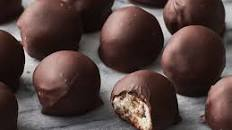

Bourbon Balls

Ingredients
- 1-1/4 cups finely chopped pecans, divided
- 1/4 cup bourbon
- 1/2 cup butter, softened
- 3-3/4 cups confectioners' sugar
- 1 pound dark chocolate candy coating, melted
Instructions
- Combine 1 cup pecans and bourbon; let stand, covered, for 8 hours or overnight.
- Cream butter and confectioners' sugar, 1/4 cup at a time, until crumbly; stir in pecan mixture. Refrigerate, covered, until firm enough to shape, about 45 minutes. Shape into 1-in. balls; place on waxed paper-lined baking sheets. Refrigerate until firm, about 1 hour.
- Dip in chocolate coating; allow excess to drip off. Sprinkle with remaining 1/4 cup pecans. Let stand until set.
Recipe Source